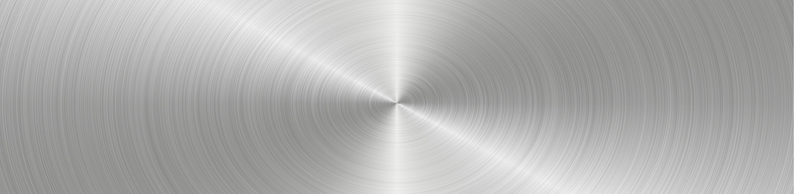

home>사업소개> 중공업/건설
중공업/건설

“미래 전력망 시스템과 친환경 건설이 녹생성장을 이끌어 갑니다.”
- 
-
- HEAVY INDUSTRY
BUILD - 효성중공업은 산업 에너지의 핵심인 중전기 분야에서 세계 최고의 기술력을 보유하고 있습니다. 변압기, 차단기 등 전력 설비는 물론 전동기, 발전기, 기어, 산업용 펌프 등의 사업분야에서도 품질의 우수성을 인정받고 있으며 에너지저장장치(ESS), 스태콤(STATCOM), 스마트그리드(Smart Grid) 등 미래 전력망 시스템 구축에 필요한 핵심기술을 개발하고 있습니다. 또한 오랜 경험과 신뢰를 바탕으로 주택사업, 업무·상업시설, 토목·환경, SOC 사업 등 다양한 건설사업에 적극 참여하고 있습니다.
- HEAVY INDUSTRY
-
효성중공업(주)
- 자연과 함께 지속가능한 저탄소 그린 라이프 선도기업
- 효성중공업㈜은 산업 에너지의 핵심인 중전기 분야에서 세계 최고 수준의 기술력을 보유하고 저탄소 그린 라이프 시대를 선도할 중공업부문과 인간과 자연이 함께 지속가능한 친환경 주거문화를 구축해나가는 건설부문으로 사업을 이루고 있습니다.
-
송배전설비 - 글로벌 중전기 시장을 선도하는 핵심사업 부문
- 초고압변압기,배전유입변압기,몰드변압기
- 효성은 독자적인 생산기술과 R&D, 글로벌 마케팅 활동을 바탕으로 스판덱스 세계시장 점유율 No.1 브랜드 'creora®'를 보유한 세계 최대의 스판덱스 메이커로 성장하였습니다. 크레오라(creora®)는 최고의 품질과 가치를 바탕으로 고객들의 니즈에 부합하는 신제품을 끊임없이 개발하여 섬유업계의 새로운 지평을 열어가고 있습니다.
-
시스템엔지니어링 - 최고의 효율을 제공하는 최상의 솔루션
- 예방진단시스텀, 전력설비 자산관리 솔루션
- 효성중공업은 송·변전 설비사업부문과 함께 보다 첨단화, 지능화 하는 도시환경 변화에 부응하기 위하여 전력감시 제어시스템, 예방진단 시스템 등 전력 IT기반의 전력자동화 사업 및 스마트그리드 (Smart Grid) 부문을 강화하고 있습니다.
-

신재생에너지 - 전력 산업의 새로운 미래 가치 창출
- 에너지 저장장치, 태양광 인버터, 태양광 EPC
- 효성중공업은 에너지저장장치(ESS), 태양광 인버터, 태양광 EPC, 풍력발전시스템 등 친환경 신재생에너지의 발전시스템을 제공함으로써 녹색기술분야를 이끌어 나가고 있습니다.